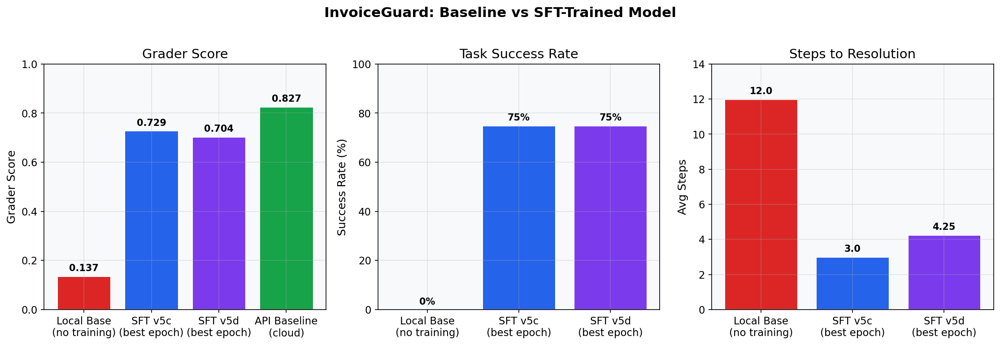

Tasks, actions, and scoring in one view
This page explains what the agent sees, what it can do, and how the grader evaluates each episode.
Task structure
InvoiceGuard contains 12 canonical tasks and 10 hard tasks (22 total). Tasks cover clean matches, duplicates, price mismatches, policy violations, and false-positive traps.
| Slice | Count | Purpose |
|---|---|---|
| Canonical | 12 | Core AP exception patterns and expected policy decisions |
| Hard | 10 | Ambiguous edge cases, traps, and deeper multi-document reasoning |
Action space
| Category | Actions |
|---|---|
| Investigation | inspect_invoice_line_items, inspect_purchase_order, inspect_goods_receipt_note, inspect_vendor_profile, inspect_policy_rules, check_for_duplicate_invoice, compare_quantity, compare_price, compare_totals, summarize_findings |
| Proposal | propose_exception_type |
| Terminal | submit_final_resolution |
Deterministic grader components
| Component | Weight | Interpretation |
|---|---|---|
| Decision correctness | 0.35 | Final decision aligns with task ground truth |
| Exception type | 0.20 | Correct classification of issue type |
| Evidence sufficiency | 0.15 | Appropriate documents/actions were used |
| Investigation quality | 0.10 | Depth and quality of exploration |
| Explanation quality | 0.10 | Clear, policy-aware reasoning in resolution |
| Efficiency | 0.10 | Avoids wasted steps and timeouts |
Baseline vs trained snapshot

The key transition is from endless investigation loops (baseline) to timely evidence-backed submissions (trained SFT checkpoints).